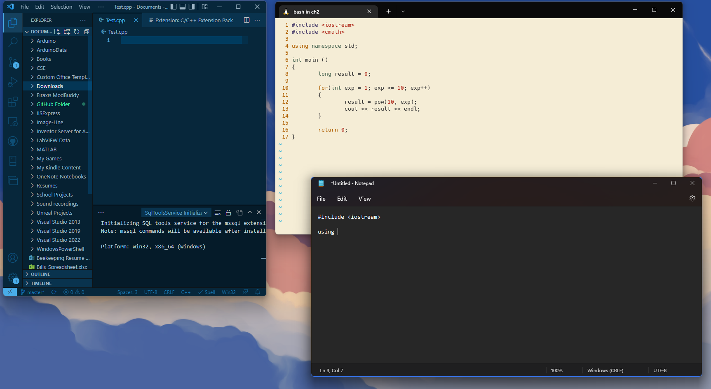
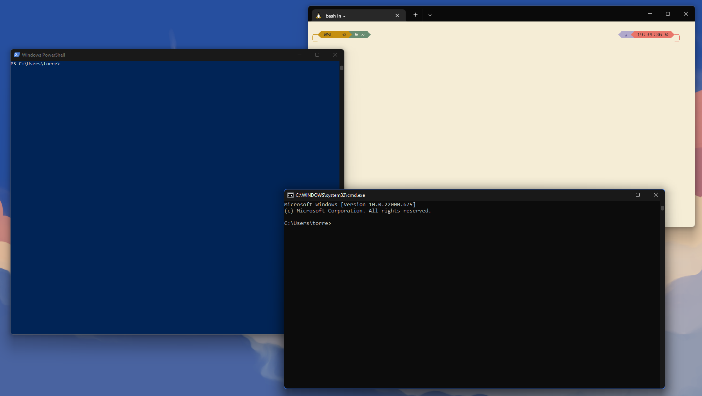
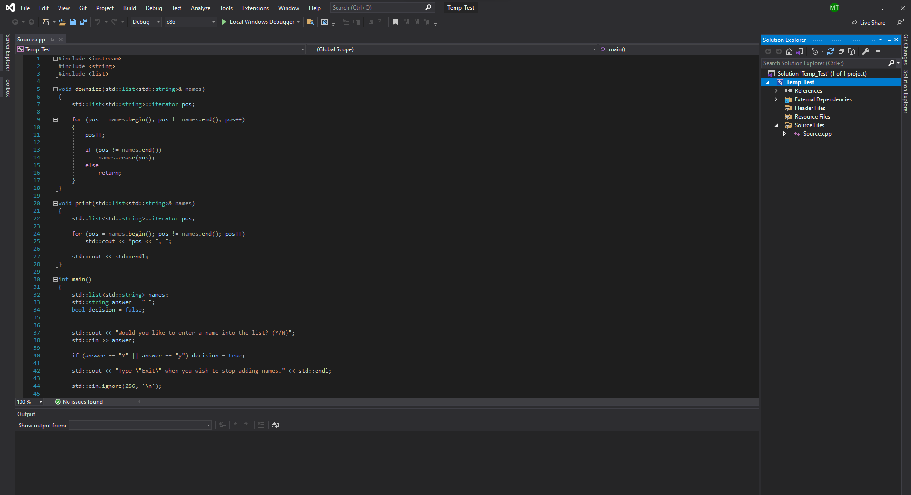
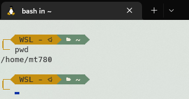
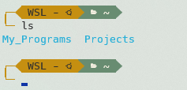
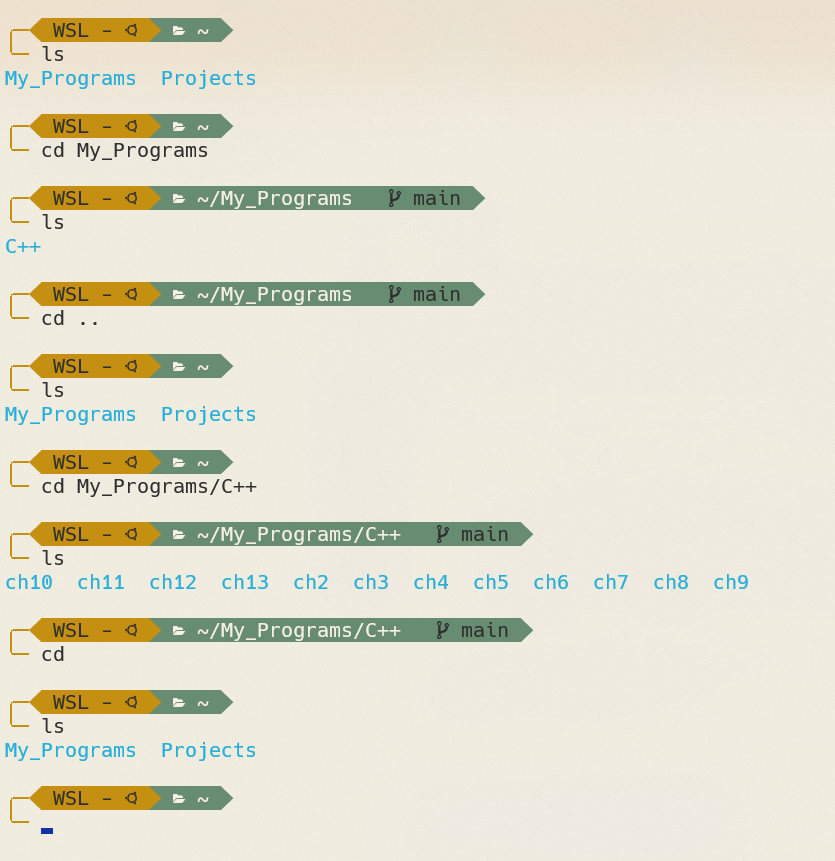

The CS L@b

 If you already have your environment set up you may skip this section, otherwise keep reading. To write your own code you will need a text editor, which like the name states, is an application that helps the user edit text. Luckily, all OS (Operating Systems) come with one! For example, Windows has Notepad, MacOS has TextEdit, and Linux usually has Vim. Now I say "usually" since there are multiple distributors that preload the Linux OS with there own choice of editor, but you will most likely encounter Vim, especially if you use Ubuntu. There are also third party editors that come with extra features. The one I am currently using is Microsoft's Visual Studio Code. Make sure to find the one that is right for you, otherwise you may look at the Intro to Operating Systems lesson to learn how to use Vim. It's great to write your code somewhere, but like all programs, you need to run it. That's where the terminal comes in!
 The terminal is a nifty place that is the bridge between you and your computer. It can take user input, run other programs, manage files, display output, and much more. For those who are using the MacOS or the Linux OS, you already have access to the terminal. As for Windows users we have cmd (command-line) and Windows Powershell. Right now would be a good time to point out the controversies behind the naming scheme and their definitions. There is a difference between, terminal, shell, and command-line, though they act so similarly that most people often interchange the names. For the sake of uniformity, we will use Linux terminal to write, compile, and run our programs. I highly recommend Window users to follow the installation and configuration guide for WSL (Windows Subsystem for Linux) on Microsoft's site. What WSL does is partition a section of your computer for Linux, and is extremely useful. If you don't want to install WSL, you can still use cmd and Notepad to write, compile, and run your code. We are almost close to creating our environment, but we need one more thing.
We have the terminal, now all we need are the tools to interpret our code. A Compiler is software that translates our high-level language, in this case C++, into low level language, which is machine code. It is easy to install one within the terminal, and I will show you in the Intro to OS lecture.
 Remember how I said you need an editor and a terminal to write code, well that's not entirely true. There are applications known as IDEs (Integrated Development Environment)s that come with the same equipment that editors and terminals have, and then some. Almost all the big ones, like Microsoft's Visual Studio - not to get confused with Microsoft's Visual Studio Code which is just the editor - are free to use, but come with a catch. Basically you can only use them for studying purposes, and can't make a profit unless you buy the business versions, while text editors and terminals are open source (FREE!) and you can do whatever you please. Companies like free, people like free, so it's best to follow the practices.
1 #include <iostream>
2 using namespace std;
3
4 int main()
5 {
6 cout << "Hello World!"\n;
7 return 0;
8 }
C++ is case-sensitive, for example, the key term return is different from the word Return. It also has a free-form layout, so space and line breaks are ignored during compilation. I know what you're thinking, if that's the case why can't I write, for example, "s t d" instead of "std" well the compiler ignores the spaces not the key words. Still, you can write each symbol, keyword, integer, and string - when we mean string we're saying a collection of characters - on their own line and it will still compile like the code above. The code above consist of multiple statements that we will examine.
On line 1 there is the #include directive, which tells the compiler to look at the contents of the iostream file that is within the less-than sign and greater-than sign. You will learn more about the file in the string manipulation section.
Line 2 tells the compiler to use the default name space to identify terms such as cout; cout is part of the iostream file. As you will learn, you can override the functionality of key terms in your program by calling a different name space, but since we're learning, we will use the standard.
Let's look at the following statement on line 4, main() is a function for the program. Every program has a main function, and can have additional functions. Notice the parenthesis, here we can provide additional information that the function might need, though since this is a simple program we can just leave it empty. You will learn more about this in future sections. The keyword int is called a data type, this specific data type says that the main function can return an integer.
Both lines 5 and 8 help identify where the content of the main function begins and ends.
In order to send output to the terminal, you need the term cout, followed by the operator <<. The part "Hello World!" is considered a string and is defined by the quotation marks "" surrounding the characters. This helps the compiler distinguish code from plain text. The escape sequence \n is considered one character to the compiler, and it tells the compiler to break and start on a new line in the terminal. The semicolon is like a period, and symbolizes the end of a statement.
Remember how I said the main function expects an integer to be returned, well this is it. On line 7 the compiler says to return 0, this means that there were no errors in the program and that it can be terminated. However, if there are errors, the terminal will give you a long list of what seems like random words at first, but it is actually important information for fixing your code.
There are two types of errors in programming, syntax errors and logical errors. The first type is usually easy to fix because the compiler usually catches it for you. This could happen when you accidentally forget the semicolon or forget an operator. logical errors on the other hand can be a little tricky. It's when the program still runs, but it doesn't do what you ask it to. Compilers can't find these errors, but a debugger can help you go step by step till you find where you went wrong.
You probably want to run your first program right away. That's great, and I want you to keep that ambition, but there are some prerequisites that you should complete first before diving in. Not to say that you can't program right away, humans are smart and can adapt, but it helps when you know the fundamentals. Overall, this section gives you a couple of pointers on where to start, and also a quick guide towards writing, compiling, and running your first program.
First you must know how to navigate, use, and troubleshoot the computer. If you're a complete beginner when it comes to computers, then I highly recommend getting a book that's for the CompTIA A+ exam. It teaches you about Windows, Linux, and MAC operating systems - basically IT stuff that doesn't involve programming. It also teaches you about the system's hardware and how to troubleshoot. It might take a while to read and comprehend, but it's well worth the time. Nothing is more embarrassing than a Computer Scientist who doesn't know how to update their drivers. Before looking for books, first visit the CompTIA website. There you can find the recent version for the CompTIA A+ exam - currently we're on tests 1001 and 1002, with 1101 and 1102 on the horizon. Notice how the test is split up into two (one's for troubleshooting software and the other is hardware), don't get discouraged it's basically a two in one situation. After that you can go to Amazon or some other retailer that provides a book. If you already know how to use your system, the next thing is the terminal.
The terminal appears to be a simple tool at first glance. Might be an empty window with no text, might show some text explaining that you need to update. Whatever the case is, it's more complicated under the hood, and mastering it is the best thing you can ever do. I highly recommend you reading the Operating Systems section, but once again, you can probably get by just knowing the fundamentals. Besides terminals, a computer scientist should have a solid foundation in math.
An alarming amount of programming websites and YouTube tutorials don't show this, but you need to have a solid foundation in math. Anyone can program, but a Computer Scientist knows about time complexities and Big-O notation, all of which involves mathematics. You can probably get away with a couple of sections in these lectures without knowing too much, but you need at least a solid foundation in calculus. Not to mention that you also need to learn about discreet mathematics and combinatorics for the more complicated situations. Luckily all of this will be mentioned in the math section of this website. You're probably tired of hearing the word math, good thing we're finally going to program.
In this section I assume that you have your terminal opened and are ready for the next instructions. If you seem to be having difficulties at any point, please refer to the internet since I cannot anticipate every issue. For now, we will be going over basic commands, updating the terminal, installing the compiler by getting the build-essential package, creating a directory, creating a C++ file, compiling that file, and running that file in that order.
Before writing our program it's essential to know how to navigate our terminal. In this section we will be going over fundamental commands. If you wish to know more visit the operating systems section, or research it online.
~$ pwd

Notifies you which directory you're currently on.
~$ ls

Provides a preview of the subdirectories in the current directory you're in.
~$ cd directory_name
~$ cd ..
~$ cd

Helps navigate the directory. Can require additional
input, for instance, if you want to move into a subdirectory
then you type and enter the subdirectory's name after the cd
command. If you want to go back one directory you simply type two periods
after the cd command. Note, if you know the location of a
directory you want to visit, then chain together a mixture
of the two periods (..) and directory names with
multiple forward slashes (/) between each one. Looking at the
example, notice the location depicted
in the green section, or notice the subdirectories
when we enter the command ls.